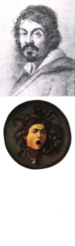
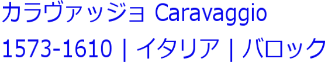

ミケランジェロ・メリージ・ダ・カラヴァッジョ
（伊: Michelangelo Merisi da Caravaggio、1571年9月28日 - 1610年7月18日）は、
バロック期のイタリア人画家。1593年から1610年にかけて、ローマ、ナポリ、マルタ、
シチリアで活動し、カラヴァッジョ（Caravaggio）という通称で広く知られている。
その作品に見られる肉体面、精神面ともに人間本来の姿を写実的に描く手法と、
光と陰の印象的な表現はバロック絵画の形成に大きな影響を与えた。
徹底した写実性と劇的な明暗対比や感情表現で、後にあらゆるバロック期の画家に
多大な影響を与えたと言われるイタリアバロック絵画最大の巨匠
（本名はミケランジェロ・メリージ Michelangelo Merisi）。
しかしその強烈すぎた表現は品位に欠けるとして非難を浴びることも多々あった。
また画家として名声を得ていたカラヴァッジョは1606年、35歳の時に喧嘩で一人の
男と決闘、相手を刺し殺しローマから逃亡。殺人犯として追われる身となったが、
逃亡先のマルタ共和国で『洗礼者聖ヨハネの斬首』を描き、これが認められ教皇
より免罪される。しかし一年も経たずして再度些細なことで決闘し投獄される。
一度は脱走を試みるも、数日後に逮捕、同作品の目前で斬首刑を宣告される。
享年38歳。
カラヴァッジョはティツィアーノの弟子だった師匠のもと、ミラノで画家の修行を
積んだ。その後、ミラノからローマへと移っているが、当時のローマは大規模な
教会や邸宅が次々と建築されており、それらの建物を装飾する絵画が求められて
いる都市だった。対抗宗教改革のさなか、ローマカトリック教会はプロテスタント
への対抗手段の一つとして自分たちの教義を補強するようなキリスト教美術品を
求めるようになる。しかしながら、盛期ルネサンス以降、およそ1世紀にわたって
美術界の主流となっていたマニエリスムは、もはや時代遅れの様式であると見な
されていた。このような状況の中、カラヴァッジョは1600年に枢機卿に依頼された
作品『聖マタイの殉教』と『聖マタイの召命』とを完成させ、一躍ローマ画壇の
寵児となった。極端ともいえる自然主義に貫かれたカラヴァッジョの絵画には
印象的な人体表現と演劇の一場面を髣髴とさせるような、現在ではテネブリズム
とも呼ばれる、強烈な明暗法のキアロスクーロの技法が使用されている。